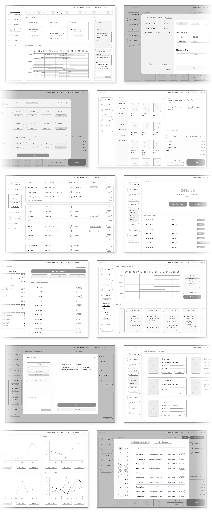

Pointouch is a new software as service POS Software that aims to make the lives of employees and managers much more manageable by good UX and bringing all of the work functions into the software.
Role
UX designer designing an app from conception to delivery.
Responsibilities
Conducting research, paper and digital wireframing, low and high-fidelity prototyping, conducting usability studies, and iterating on designs.
Duration
October-December 2023
Problem
Current POS softwares on the market are not thorough enough to meet all work requirements, employees usually need more than one platform for their work. Many of them are outdated and difficult to use.
Goal
To design a POS Software that every employee and manager could use while making it easier for them to communicate with each other. Gathering all required processes of retail and cafe work into one system, leaving no need for other softwares or websites.
Research
I have interviewed multiple retail stores and coffee shops (employees and managers) and asked them general questions about their experiences with POS systems. I have avoided restaurants because initial basic research before the interviews showed that they required a very different software structure than the other two, which were pretty similar.
Here are some of the questions I've asked during the interviews:
"What feature(s) would you like to see in a new POS software?"
"What other technologies and programs are you using alongside the POS, and can you explain their functions?"
"What are your favourite features of POS systems and other programs you have used?"
"What are some of the common problems you have encountered with POS softwares you have been using?"
Personas
In both coffee shops and the stores, employees had similar wishes and problems. Meanwhile, managers' issues were similar to each other but different from their employees. That is why I have divided personas into two categories, employees and managers.
User Journey Map
The user journey map of both coffee and retail shop employees combined. Day-to-day includes lots of small and some big tasks that, when added up, do have a tendency to mentally drain a person. Something that could be done about this is to have daily routine and singular occurrence lists, among other things that are shown here.

Competitive Audit
Since these types of software are paid software for specific purposes, it was hard to find good quality free versions. So, I've downloaded the trial versions for the competitive audit or used their online demo versions. I've also looked through the comments, criticisms and good remarks that were made about the software.

Ideation
Based on the information gathered by the research, some ideas have started to form such as what features that people mainly wanted, what to incorporate or stay away from or what can be done to solve some common problems. So, I have taken notes of these ideas started to work upon them.
Sitemap
The structure of the app is hierarchical. From the homepage, it has been divided into six branches of the main menu (accounts, payment, applications, investing, budget, profile) and 'search' and 'help' sections.

User Flow
Here are the user flows for the opening shift and the checkout process in brown, the closing shift in purple, and the manager's process in teal. The user flow is the same for both the retail store employees and coffee shop employees. The user flow for the coffee shop employee was made based on the assumption that the coffee shop would be functioning as a takeout or a self-serve coffee shop, where workers would be behind the counter. It would be a whole other project (with a very different user flow) to make a POS software for places where servers are involved, like restaurants, so it was avoided.
Crazy Eights
There were several features that I wanted to incorporate into the design or avoid while doing the crazy eights exercise. Some of them were: Customizable homepage, detailed and categorized expenses page, icons and explanatory buttons, simple design that is detailed enough, most used functions on the homepage, visible search bar, timetables, notification and scheduling options, etc.
Low Fidelity Design
Slowly, from the products of the ideation process, the app's outlines have started to form. To make the ideas and concepts morph into physical forms in the best way possible, I've tried many alternative designs starting from sketching.
Sketches
I've combined the best features from the crazy eights exercise into complete sketches on paper. I believe using pen and paper while designing fuels creativity.
Wireframes
Then, I've turned those paper sketches into digital wireframes. I've also added more digital wireframes to the design so that there were enough wireframes to complete multiple userflows.Below, are some of the main wireframes of the design.
Low Fidelity Prototype
The final prototype before the usability study. Multiple wireframes were connected to make userflows and those userflows were connected to make one complete prototype.
The final prototype before the usability study. Multiple wireframes were connected to make userflows and those userflows were connected to make one complete prototype.
The final prototype before the usability study. Multiple wireframes were connected to make userflows and those userflows were connected to make one complete prototype.
The final prototype before the usability study. Multiple wireframes were connected to make userflows and those userflows were connected to make one complete prototype.
The final prototype before the usability study. Multiple wireframes were connected to make userflows and those userflows were connected to make one complete prototype.
The final prototype before the usability study. Multiple wireframes were connected to make userflows and those userflows were connected to make one complete prototype.
Testing
Next, it was time to test the low fidelity prototype.
Usability Study
Changes
I've done changes on the wireframes based on the outcome of the usability study. The themes and their insights were the main factors for the changes.
High Fidelity Design
I have had conversations with people who wanted to do something good for the environment but didn’t know where to start or what to do. Then, I interviewed these people to gather more insight. I also conducted interviews with people who are interested in investments. The primary user group was people who cared about their community and environmentalists. Here's some of the questions I've asked:
"What would you like to see
Mockups
Next, it was time to test the low fidelity prototype.

Next, it was time to test the low fidelity prototype.

High Fidelity Prototype
The final prototype before the usability study. Multiple wireframes were connected to make userflows and those userflows were connected to make one complete prototype.
The final prototype before the usability study. Multiple wireframes were connected to make userflows and those userflows were connected to make one complete prototype.
The final prototype before the usability study. Multiple wireframes were connected to make userflows and those userflows were connected to make one complete prototype.
The final prototype before the usability study. Multiple wireframes were connected to make userflows and those userflows were connected to make one complete prototype.
The final prototype before the usability study. Multiple wireframes were connected to make userflows and those userflows were connected to make one complete prototype.
The final prototype before the usability study. Multiple wireframes were connected to make userflows and those userflows were connected to make one complete prototype.
Design System

made by M. Dilara Özdemir
with love